Unidad 2
Orígenes históricos
Fundamentos en Ciencias de la Computación

Una pregunta inicial
¿Cómo llegamos desde contar con piedras hasta tener computadoras, Internet e inteligencia artificial?
La historia de la computación es una evolución de miles de años.

Fundamentos en Ciencias de la Computación
Fundamentos en Ciencias de la Computación
Precursores: Computar es mucho más antiguo que las computadoras
Durante gran parte de la historia humana:
- Computar significaba calcular
- Muchas veces lo hacía una persona
- O se utilizaban herramientas para ayudar al cálculo
La computadora moderna es solo la etapa más reciente de esta evolución.
Primeras herramientas de cálculo
Las primeras civilizaciones necesitaban calcular para:
- comercio
- impuestos
- agricultura
- astronomía
- construcción
Esto llevó a la creación de instrumentos de cálculo.
Fundamentos en Ciencias de la Computación
El ábaco
El ábaco es uno de los instrumentos de cálculo más antiguos, con más de 2000 años de historia.
Permite realizar operaciones aritméticas mediante el movimiento de cuentas.
Fundamentos en Ciencias de la Computación
Características del ábaco
- Representa números mediante posiciones
- Permite sumar, restar, multiplicar y dividir
- Fue ampliamente utilizado en Asia y Europa
- Todavía se usa para enseñanza
Es un ejemplo de herramienta que amplía la capacidad humana para calcular.
Fundamentos en Ciencias de la Computación
El surgimiento de máquinas de cálculo
Con el desarrollo del comercio y la ciencia:
- los cálculos se volvieron más complejos
- aumentó la necesidad de automatizar el cálculo
Esto llevó a la creación de máquinas mecánicas.
Fundamentos en Ciencias de la Computación
La Pascalina
Inventada por Blaise Pascal (1642).
Permitía realizar sumas y restas automáticamente mediante engranajes.
Fundamentos en Ciencias de la Computación
Máquina de Leibniz
Gottfried Wilhelm Leibniz (1673) mejoró las máquinas de cálculo.
Su máquina podía realizar:
- suma
- resta
- multiplicación
- división
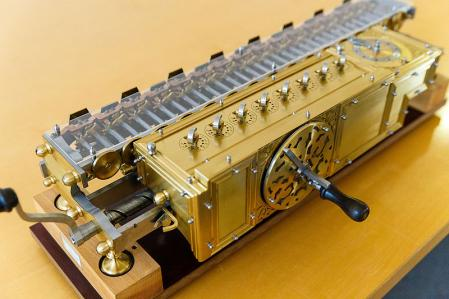
Fundamentos en Ciencias de la Computación
Una idea clave: el algoritmo
El matemático Al-Juarismi (820) formalizó la idea de algoritmo.
Un algoritmo es:
una secuencia finita y ordenada de pasos para resolver un problema.
Esta idea es fundamental para la computación moderna.
Fundamentos en Ciencias de la Computación
El sistema binario
Leibniz también estudió el sistema binario (0 y 1).
Hoy es la base del funcionamiento de todas las computadoras digitales.
Fundamentos en Ciencias de la Computación
Fundamentos en Ciencias de la Computación
Computadoras
Charles Babbage
Matemático e inventor inglés del siglo XIX.
Es considerado uno de los pioneros de la computación.

Fundamentos en Ciencias de la Computación
La máquina diferencial (1822)
Babbage diseñó una máquina para:
- calcular tablas matemáticas
- reducir errores humanos
Funcionaba mediante mecanismos mecánicos de engranajes.
prototipo no finalizado
Fundamentos en Ciencias de la Computación
La máquina analítica (1837)
Babbage propuso una máquina mucho más avanzada.
La máquina analítica tenía ideas similares a las computadoras modernas.
Fundamentos en Ciencias de la Computación
Conceptos revolucionarios
La máquina analítica incluía ideas clave:
- memoria
- unidad de cálculo
- entrada de datos
- salida de resultados
- programa (tarjetas perforadas)
Es sorprendentemente similar a una computadora actual.
Fundamentos en Ciencias de la Computación
Fundamentos en Ciencias de la Computación
Programas
Ada Lovelace
Ada Lovelace trabajó con Babbage (1833).
Es considerada la primera programadora de la historia.
Fundamentos en Ciencias de la Computación
La primera idea de programa
Ada Lovelace escribió un algoritmo para la máquina analítica.
Su trabajo anticipó ideas modernas como:
- programación
- software
- computación general
"[La máquina analítica] podría actuar sobre otras cosas además del número, se encontraron objetos cuyas relaciones fundamentales mutuas podrían ser expresadas por la de la ciencia abstracta de las operaciones, y que también deberían ser susceptibles de adaptaciones a la acción de la notación operativa y el mecanismo del motor…
Suponiendo, por ejemplo, que las relaciones fundamentales de los sonidos en la ciencia de la armonía y de la composición musical fueran susceptibles de tal expresión y adaptaciones, el motor podría componer piezas de música elaboradas y científicas de cualquier grado de complejidad o medida"
Fundamentos en Ciencias de la Computación
Fundamentos en Ciencias de la Computación
De máquinas mecánicas a computadoras
Durante el siglo XX ocurrieron avances clave:
- electrónica
- lógica matemática
- circuitos
- teoría de algoritmos
Esto llevó a la creación de las primeras computadoras.
Primer generación de computadoras (1940-1952)
Algunas de las primeras computadoras:
- Z3 (1941)
- ENIAC (1945)
- EDVAC
- Colossus
Programarlas era extremadamente complejo.
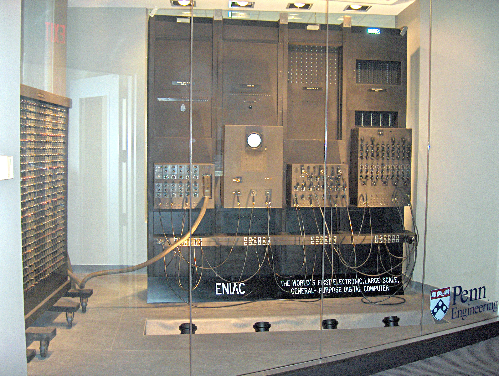
Fundamentos en Ciencias de la Computación
Relés y Válvulas
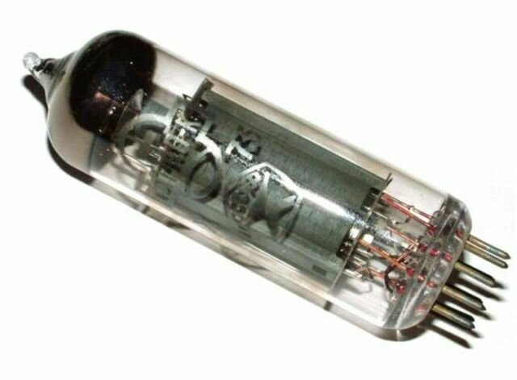
Segunda generación de computadoras (1956-1967)
Algunas de las primeras computadoras:
- DEC PDP-1
- IBM 1407
Primer videojuego
Fundamentos en Ciencias de la Computación
Transistores
Tercer generación de computadoras (1964-1971)
Algunas computadoras:
- IBM 360
Uso científico o comercial
Fundamentos en Ciencias de la Computación
Circuitos integrados
Cuarta generación de computadoras (1972-presente)
Algunas computadoras:
- PDP-11/70
- IBM PC
- Apple 2e
Computadoras personales
Fundamentos en Ciencias de la Computación
Microprocesadores
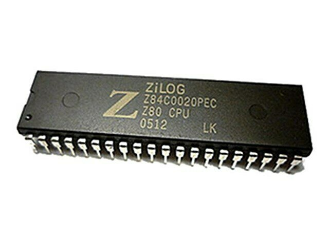
Fundamentos en Ciencias de la Computación
John von Neumann
Matemático del siglo XX.
En 1945 propuso un modelo conceptual para organizar las computadoras que se transformó en el estándar de la industria.
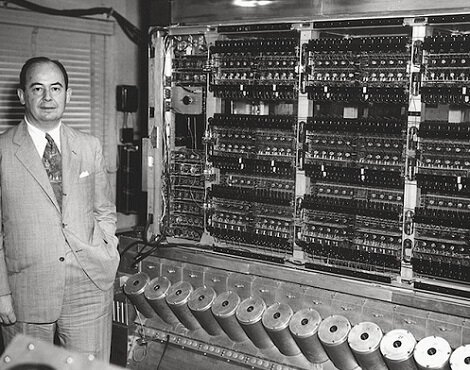
Idea clave
La propuesta principal fue:
guardar programas y datos en la misma memoria.
Esto permitió que las computadoras fueran programables y flexibles.
Fundamentos en Ciencias de la Computación
Arquitectura general
Componentes principales:
- CPU
- memoria
- entrada
- salida
- buses de comunicación
Fundamentos en Ciencias de la Computación

La CPU incluye:
- ALU
- unidad de control
- registros
Fundamentos en Ciencias de la Computación
CPU
La CPU (Central Processing Unit) es el "cerebro" de la computadora.
Se encarga de ejecutar instrucciones y coordinar todo el sistema.
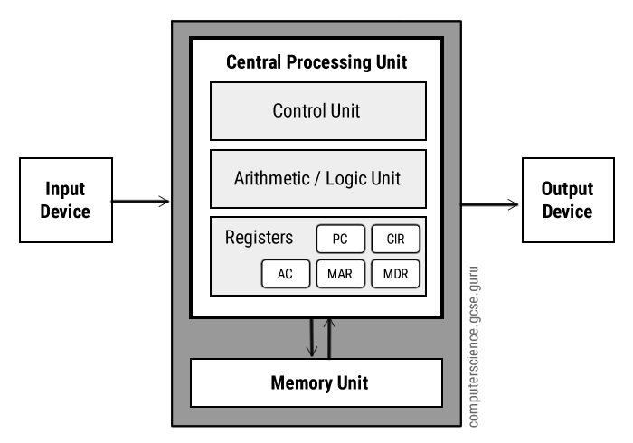
[ Memory Address Register (MAR) | Memory Data Register (MDR) | Stack Count | Instruction | Accumulator ]
ALU
La Arithmetic Logic Unit realiza:
- operaciones matemáticas
- operaciones lógicas
- comparaciones
Aquí ocurre el procesamiento real.

Fundamentos en Ciencias de la Computación
Unidad de control
La unidad de control:
- interpreta instrucciones
- coordina las operaciones
- controla el flujo de datos
Fundamentos en Ciencias de la Computación
[ Memory Address Register (MAR) | Memory Data Register (MDR) | Stack Count | Instruction | Accumulator ]
Registros
Los registros son memorias muy pequeñas y muy rápidas dentro de la CPU.
Se usan para almacenar datos temporales durante la ejecución.
Fundamentos en Ciencias de la Computación
[ Memory Address Register (MAR) | Memory Data Register (MDR) | Stack Count | Instruction | Accumulator ]
Memoria principal
La memoria principal almacena:
- programas
- datos
- resultados intermedios
Ejemplo actual: RAM
Fundamentos en Ciencias de la Computación
[ Memory Address Register (MAR) | Memory Data Register (MDR) | Stack Count | Instruction | Accumulator ]
Dispositivos de entrada
Permiten introducir información al sistema.
Ejemplos:
- teclado
- mouse
- sensores
- red
Fundamentos en Ciencias de la Computación
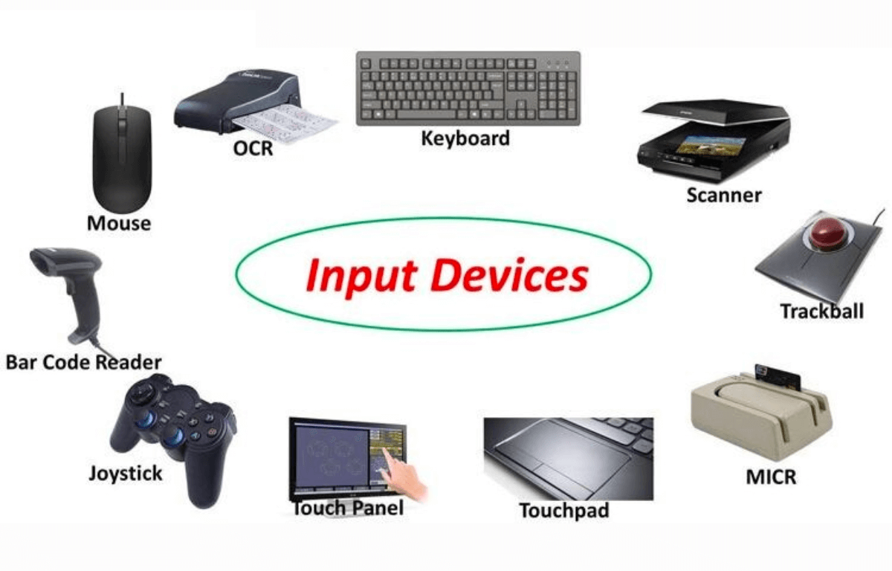
Dispositivos de salida
Permiten obtener los resultados.
Ejemplos:
- monitor
- impresora
- almacenamiento
- red
Fundamentos en Ciencias de la Computación
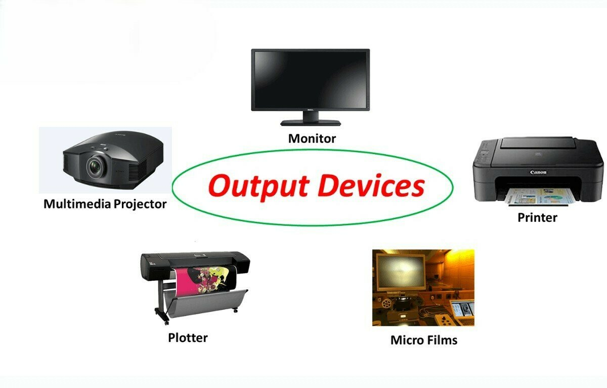
Buses
Los buses conectan los componentes del sistema.
Transportan:
- datos
- direcciones
- señales de control
Fundamentos en Ciencias de la Computación
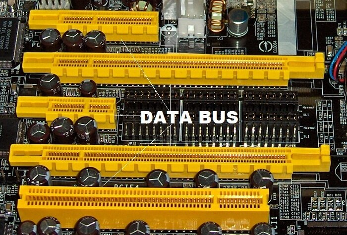
Ciclo de instrucción
Las computadoras ejecutan instrucciones mediante un ciclo continuo:
- Fetch [obtener]
- Decode [interpretar]
- Execute [ejecutar]
- Store [guardar]
Fundamentos en Ciencias de la Computación
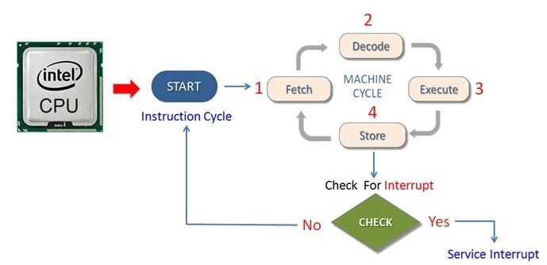
Este ciclo se repite continuamente, en millones de instrucciones por segundo.
Arquitectura de von Neumann
-
el cuello de botella de von Neumann (memoria única datos e instrucciones)
-
el paralelismo limitado
-
la eficiencia energética
Fundamentos en Ciencias de la Computación
Es el modelo de arquitectura conceptual dominante
No es la única forma de organizar una computadora
Los procesadores actuales son en realidad híbridos
Problemas:
Fundamentos en Ciencias de la Computación
Otras arquitecturas de computadoras
Arquitectura Harvard
Idea principal:
separar la memoria de instrucciones de la memoria de datos
Esto permite:
- acceder a instrucciones y datos al mismo tiempo
- mejorar el rendimiento

Fundamentos en Ciencias de la Computación
Dónde se usa Harvard
Este tipo de arquitectura se utiliza mucho en:
- microcontroladores
- sistemas embebidos
- dispositivos electrónicos pequeños
Ejemplos:
- Arduino
- controladores industriales
- electrodomésticos inteligentes
Fundamentos en Ciencias de la Computación
Procesadores con múltiples núcleos
Las computadoras modernas suelen tener varios procesadores trabajando en paralelo.
Ejemplo:
un CPU con
- 4 núcleos
- 8 núcleos
- 16 núcleos
Esto permite ejecutar varias tareas al mismo tiempo real
Fundamentos en Ciencias de la Computación
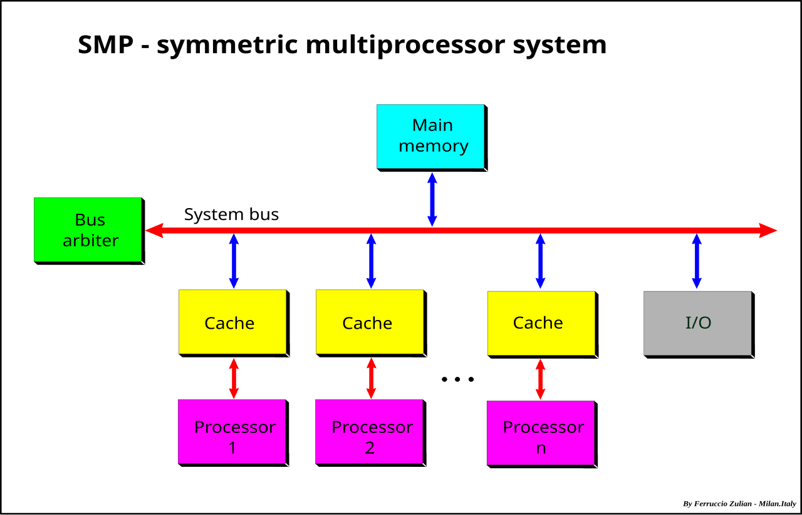
Computación paralela
La idea es dividir un problema grande en muchas partes más pequeñas.
Cada procesador trabaja en una parte.
Ejemplos donde esto es importante:
- simulaciones científicas
- inteligencia artificial
- análisis de grandes volúmenes de datos
Fundamentos en Ciencias de la Computación
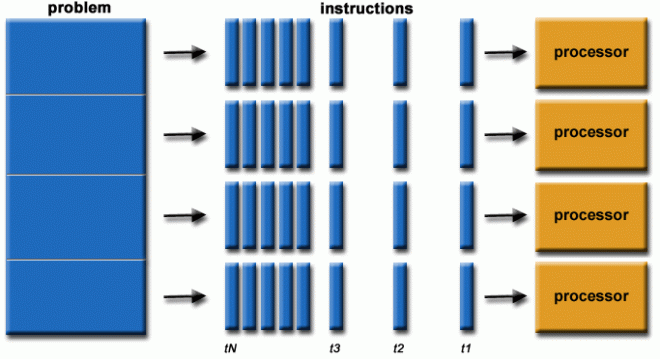
GPU y procesamiento vectorial
Las GPUs (Graphics Processing Units) fueron diseñadas originalmente para gráficos.
Pero hoy también se usan para:
- inteligencia artificial
- simulaciones
- cálculo científico
Una GPU puede tener miles de núcleos simples.
Fundamentos en Ciencias de la Computación
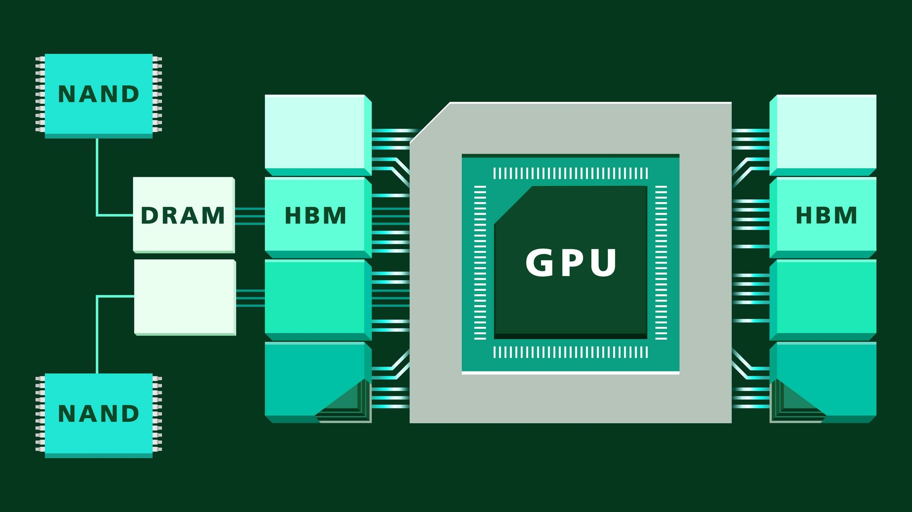
Computación neuromórfica
Algunos investigadores están diseñando computadoras inspiradas en el cerebro humano.
Características:
- redes de neuronas artificiales
- comunicación por señales
- gran eficiencia energética
Fundamentos en Ciencias de la Computación
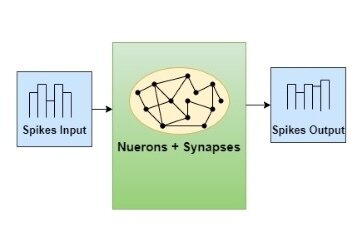
Las computadoras modernas son híbridas
Los procesadores actuales combinan varias ideas:
- modelo Von Neumann
- múltiples núcleos
- unidades SIMD
- GPUs
- memorias cache separadas
Es decir:
la arquitectura real es una combinación de varios enfoques.
Fundamentos en Ciencias de la Computación
Sobre esta presentación
Atribución 4.0 Internacional (CC BY 4.0)
https://creativecommons.org/licenses/by/4.0/deed.es